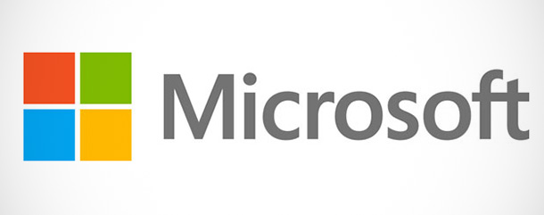

Historia da microsoft

Se pensarmos nas maiores empresas de tecnologia da informação que conhecemos,certamente a Microsoft está entre as primeiras da lista.Mas a empresa que domina o mercado mundial de sistemas operacionais e de programas de escritório,como toda empresa,foi pequena um dia.
Na década de 1970,todos os escritórios tinham máquinas de escrever.Se quisessem copiar um documento,as pessoas dependiam do mimeógrafo e do papel carbono.Enquanto alguns de nós nunca ouvirmos falar nesses equipamentos do mundo moderno,eles eram a base dos escritórios da década de 1970.Naquela época,poucas pessoas haviam ouvido sobre os microcomputadores,mas dois jovens acreditaram que essas máquinas eram o futuro. Em 1975, Bill Gates e Paul Allen,fundaram a Microsoft com o objetivo visionário de instalar um computador em cada mesa de trabalho e em cada casa.Embora poucas pessoas naquela época acreditassem nessa visão,hoje,sabemos que eles estavam certos.
A história começa com a edição de janeiro de 1975 da revista Popular Electronics,que apresentava o microcomputador Altair 8800,da empresa Micro Instrumentation and Telemetry Systems (MITS).Paul percebeu que eles poderiam construir um interpretador BASIC para o dispositivo.Assim,qualquer programador BASIC da época poderia programar o Altair.Gates então ligou para a MITS e se comprometeu com uma demonstração do interpretador,que eles não tinham.Allen construiu um simulador do Altair enquanto Gates desenvolveu o interpretador prometido.
Na demonstração,em Albuquerque,Novo México,em março de 1975,o interpretador funcionou perfeitamente, embora tenham testado apenas no simulador criado.O interpretador foi distribuído como Altair BASIC.Assim, em 4 de abril de 1975,a Microsoft foi fundada oficialmente com Bill Gates no cargo de diretor executivo.Em agosto de 1977,em um acordo com a revista ASCII, do Japão,a companhia estabeleceu seu primeiro escritório internacional.Em janeiro de 1979,a sede da empresa foi transferida para a cidade de Bellevue,perto de Seattle,no estado de Washington.Em junho de 1980,Bill e Paul contrataram Steve Balmer,colega de Bill Gates em Harvard, para ajudar na companhia.
O início dos sistemas operacionais
A Microsoft entrou no ramo de sistemas operacionais em 1980 com sua própria versão do Unix,chamada Xenix.Depois que as negociações da IBM com a Digital Research falharam, a empresa contratou a Microsoft em novembro de 1980 para o desenvolvimento de uma versão do CP/M OS, que seria usado no computador pessoal que a IBM desenvolvia,conhecido como "Chess".
O planejamento da IBM era construir o seu computador pessoal em apenas um ano,usando peças padrão de mercado,que eram produzidas por diferentes fabricantes em vários países.Nesse projeto,a Microsoft focou em um novo sistema operacional chamado MS-DOS (MicroSoft Disk Operating System),que solidificaria o domínio da Microsoft no mercado de sistemas operacionais.A origem do MS-DOS é o QDOS (Quick and Dirty Operating System),comprado da Seattle Computer Systems em Dezembro de 1980.
Com uma grande jogada de mercado da Microsoft no acordo com a IBM,os direitos de comercialização do MS-DOS se mantiveram com a Microsoft.Os diretores da IBM não vislumbravam lucro e sucesso para o software.O lançamento do computador da IBM ocorreu em agosto de 1981.Rapidamente o IBM-PC teve larga adoção devido ao seu baixo custo.Além disso, por ser baseado em peças comuns encontradas no mercado, surgiram diversos clones do computador da IBM,cada um mais barato do que o outro.Operando todos esses computadores estava o MS-DOS,da Microsoft,que se tornava a fabricante líder do mercado de sistemas operacionais.
O novo sistema operacional introduzia uma nova linguagem para o público geral. Digitar “C:” e diversos outros comandos se tornou parte do trabalho diário. Portanto, embora um sucesso, o MS-DOS mostrou-se difícil de entender para muitas pessoas. Tinha-se que desenvolver uma nova forma de utilizar o sistema operacional. E essa nova forma foi apresentada inicialmente pelo Apple Lisa, em 1983, e chama-se interface gráfica do usuário.
O nascimento do Windows
Quando Bill Gates viu a interface gráfica em uma demonstração do Apple Lisa, antes de seu lançamento, na casa de Steve Jobs,Bill Gates sabia que precisava daquilo em seu sistema operacional.Em 1984, enquanto desenvolvia um novo sistema operacional junto com a IBM, o OS/2,a Microsoft lançou o Windows,como uma extensão gráfica para o MS-DOS.Bill Gates foi acusado de copiar a interface da Apple e,até hoje,diz-se que a Microsoft copia a Apple.Não vamos discutir o mérito neste artigo.
Em novembro de 1986,a Microsoft mudou novamente sua sede,agora para Redmond,ao norte de Seattle,no estado de Washington.No dia 13 de março daquele mesmo ano, a empresa teve sua oferta pública de ações.O crescimento das ações fez quatro bilionários e 12 mil milionários entre os empregados da Microsoft.
Guerra dos navegadores
O começo dessa gigante da informática envolveu também disputas judiciais.Devido a parceria com a IBM,em 1990,a comissão de comércio americana começou a observar as práticas de comércio da empresa, em busca de possíveis ações conjuntas para formar cartéis.Esse fato marcou o começo de mais de uma década de rachas judiciais entre o governo americano e a Microsoft.Dentre eles,o principal ocorreu na segunda metade da década de 1995,em um episódio conhecido como a Guerra dos Navegadores.Na ocasião a Microsoft distribuiu gratuitamente o seu navegador Internet Explorer para vencer a disputa comercial com a Netscape,líder do mercado na época.